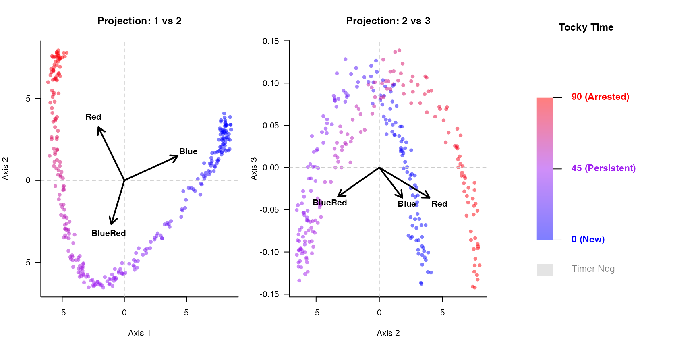

Getting Started with CanonicalTockySeq
Masahiro Ono
2026-03-13
Source:vignettes/Getting_Started.Rmd
Getting_Started.RmdIntroduction
CanonicalTockySeq utilizes a supervised Canonical Redundancy Analysis (RDA) to construct a transcriptomic manifold with conical geometry. By anchoring single-cell expression data to known developmental landmarks, it allows researchers to accurately trace continuous in vivo trajectories.
This vignette demonstrates the core workflow: simulating a structured transcriptomic manifold, generating the canonical space, projecting cells via piecewise Spherical Linear Interpolation (SLERP), and visualizing the resulting trajectory.
1. Simulating a Transcriptomic Manifold
To demonstrate the workflow, we will generate a synthetic single-cell dataset with a true underlying biological structure. We engineer continuous temporal cascades using Gaussian functions so that genes peak sequentially along a developmental trajectory, mirroring real biological differentiation.
The CanonicalTockySeq function requires two inputs:
-
X: A numeric matrix of gene expression (Genes x Cells). -
Z: A numeric matrix of explanatory variables (Genes x Signatures), representing Tocky-specific landmark signatures.
set.seed(2026)
n_genes <- 500
n_cells <- 300
# 1. Assign true developmental time to cells
true_time <- runif(n_cells, 0, pi/2)
cell_names <- paste0("Cell_", 1:n_cells)
# 2. Engineer Continuous Temporal Cascades for Top 100 Genes
# We use a Gaussian function so each gene peaks sequentially along the trajectory
gene_peaks <- seq(0, pi/2, length.out = 100)
X_signal <- matrix(0, nrow = 100, ncol = n_cells)
for(i in 1:100) {
X_signal[i, ] <- exp( - (true_time - gene_peaks[i])^2 / 0.1) * 20
}
# Add 400 random noise genes to mimic background transcription
X_noise <- matrix(runif(400 * n_cells, 0, 2), nrow = 400, ncol = n_cells)
X_base <- rbind(X_signal, X_noise)
# Add statistical noise and format as non-negative counts
X <- round(X_base + matrix(rnorm(n_genes * n_cells, sd = 1), nrow = n_genes))
X[X < 0] <- 0
colnames(X) <- cell_names
rownames(X) <- paste0("Gene_", 1:n_genes)
# 3. Create Gene Constraints (Z) matching the biological landmarks
# Blue (New) peaks at t=0, BlueRed (Persistent) at t=pi/4, Red (Arrested) at t=pi/2
all_gene_peaks <- c(gene_peaks, runif(400, 0, pi/2))
Z <- matrix(0, nrow = n_genes, ncol = 3)
colnames(Z) <- c("Blue", "BlueRed", "Red")
rownames(Z) <- rownames(X)
Z[, "Blue"] <- exp( - (all_gene_peaks - 0)^2 / 0.2 )
Z[, "BlueRed"] <- exp( - (all_gene_peaks - pi/4)^2 / 0.2 )
Z[, "Red"] <- exp( - (all_gene_peaks - pi/2)^2 / 0.2 )2. Canonical Redundancy Analysis (RDA)
Now we apply the RDA architecture to our structured data, treating genes as “sites” and cells as “species” constrained by the Tocky stages.
# Perform the RDA procedure
tocky_res <- CanonicalTockySeq(X = X, Z = Z)## Normalization and projection completed...
## Performing fast partial SVD (irlba) for top 3 components...
## SVD completed...
# The result contains cell_scores and biplot vectors representing the constraints
head(tocky_res$cell_scores)## Axis1 Axis2 Axis3
## Cell_1 -4.899648 -0.4118435 0.07252784
## Cell_2 -3.354054 -5.2585889 -0.07559201
## Cell_3 7.722975 1.8536392 0.03377961
## Cell_4 3.640430 -2.8359025 0.09108674
## Cell_5 -3.306396 -5.1053278 -0.07724761
## Cell_6 7.983498 2.5867261 -0.082063523. Manifold Reconstruction via SLERP
To resolve the temporal gradient, we project the cells onto a piecewise SLERP manifold. We define the landmarks based on the biplot vectors extracted directly from our RDA.
# Extract landmark vectors from the RDA biplot
landmark_B <- tocky_res$biplot["Blue", ]
landmark_BR <- tocky_res$biplot["BlueRed", ]
landmark_R <- tocky_res$biplot["Red", ]
# Calculate Tocky Time (Angle) and Tocky Intensity (Radial norm)
gradient_res <- GradientTockySeq(
res = tocky_res,
B = landmark_B,
BR = landmark_BR,
R = landmark_R,
filter_negative = TRUE
)
head(gradient_res)## angle intensity norm_intensity similarity
## Cell_1 62.030093 4.917462 0.7503280 4.914655
## Cell_2 47.865077 6.237640 1.0831980 6.237638
## Cell_3 3.211185 7.942384 0.8115684 7.941769
## Cell_4 29.200362 4.615557 0.6575578 4.612111
## Cell_5 47.965652 6.082976 1.0569795 6.082976
## Cell_6 0.647799 8.392504 0.8855437 8.3924674. Visualizing the Conical Manifold
We can now visualize the constrained ordination space. Notice how the
simulated temporal cascades naturally form a sweeping, continuous
biological trajectory. The plotCanonicalTocky function
displays the axes alongside a continuous gradient legend for Tocky
Time.
plotCanonicalTocky(tocky_res, gradient_res, alpha_level = 0.5)
5. Identifying Gene Dynamics
With the continuous temporal gradient established along our arched manifold, we can rapidly filter for genes that vary significantly along the Tocky Time axis.
# Filter for top dynamic genes
dynamic_genes <- SelectTockyGenes(
expression_data = X,
gradient_res = gradient_res,
top_n = 5
)## Initial screen: 500 genes passed expression threshold (5.0%).
## Scoring dynamics for 500 genes...
## Selected top 5 genes.
# Plot the expression dynamics of a top gene using LOESS smoothing
plotGeneDynamics(
expression_data = X,
gradient_res = gradient_res,
gene = dynamic_genes[1],
span = 0.8
)